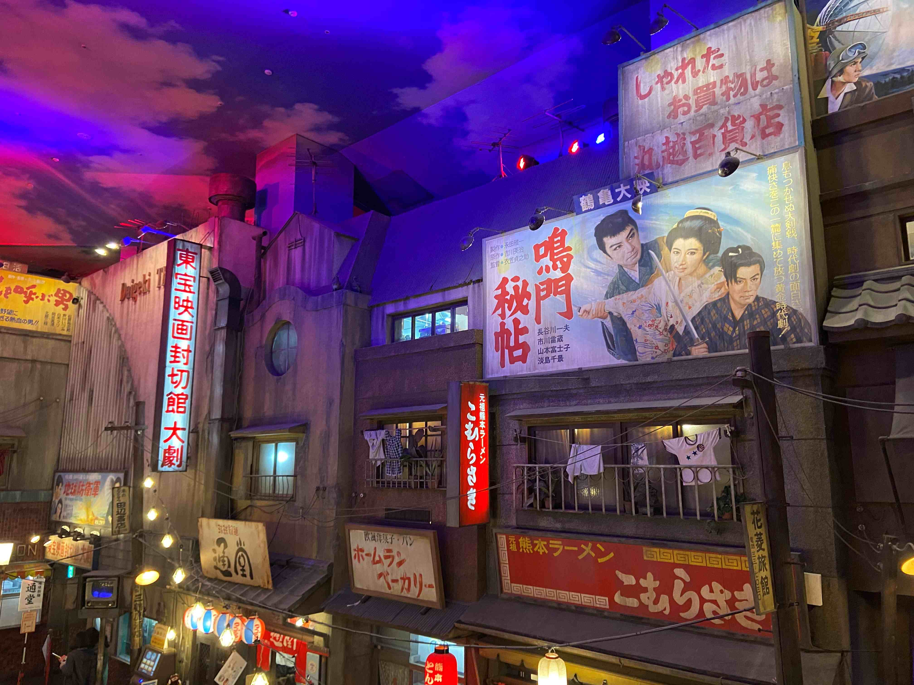

ラーメン博物館にあった映画看板

今年3月撮影
昭和の街並みを再現したラーメン博物館の中にある看板
周りの雰囲気にあった大きな看板で印象的だった
ビバ~マツケンサンバⅡワールドカフェ~オレ！―Tokyo Parade-
今年7月撮影
渋谷パルコにてたまたま見かけた「ビバ~マツケンサンバⅡワールドカフェ~オレ！―Tokyo Parade-」のメニュー看板
需要が謎のコラボカフェかつメニュー名が奇抜で非常に印象的だった
横にあった予約状況には全日満予約と書かれてあった
ディズニーシー40周年
今年10月撮影
今年ディズニーシーが40周年になるにあたって壁にされていたサイン
入場口すぐのメディテレーニアンハーバーというところの各地にこのサインがあり、ディズニーにきたわくわく感を高めてくれる